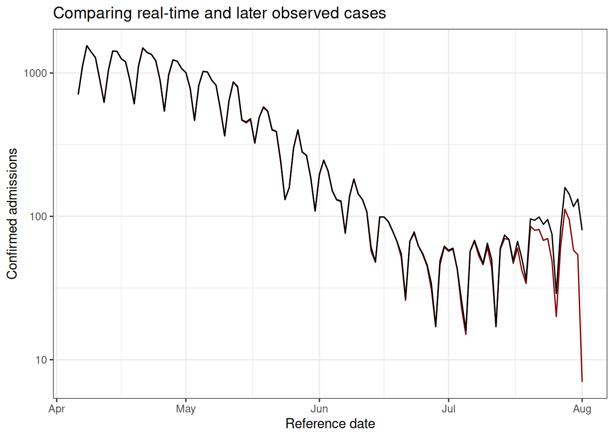
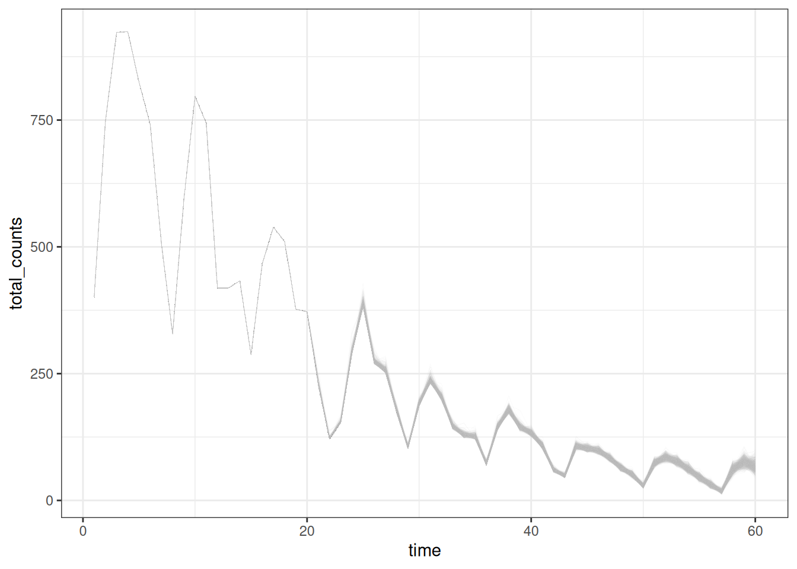

1 Introduction
Incomplete reporting of epidemiological data at recent times can result in case count data that is right-truncated. Right-truncated case counts can be misleading to interpret at face-value, as they will typically show a decline in the number of reported observations in the most recent time points. These are the time points where the highest proportion of the data has yet to be observed in the dataset.
The imputation of the cases that will eventually be observed up until the current time is referred to as a nowcast.
A number of methods have been developed to nowcast epidemiological case count data.
The purpose of baselinenowcast is to provide a nowcast computed directly from
the most recent observations to estimate a delay distribution empirically, and
apply that to the partially observed data to generate a nowcast.
In the below section, we will describe an example of a nowcasting problem, and
demonstrate how to use baselinenowcast to estimate a delay distribution from
the data and apply that estimate to generate a probabilistic nowcast.
2 Packages
As well as the baselinenowcast package this vignette also uses epinowcast,
ggplot2, and dplyr.
The installation of epinowcast is not required for using the package,
however, its pre and post-processing functions provide a lot of the data
wrangling needed to set up the nowcasting problem.
We note that no components of the vignette require installing CmdStan,
which is a downstream dependency of epinowcast.
We will just be using the R components of epinowcast, which can be
installed using the example lines of code below, so there is no need to
additionally install CmdStan.
# Installing epinowcast
# install.packages( #nolint
# "epinowcast", repos = "https://epinowcast.r-universe.dev" #nolint
# ) #nolint
# Load packages
library(baselinenowcast)
library(epinowcast)
library(ggplot2)
library(dplyr)
# Set seed for reproducibility
set.seed(123)3 Data
Nowcasting of right-truncated case counts involves the estimation of reporting delays for recently reported data. For this, we need case counts both by when they were diagnosed (often called “reference date”) and by when they were reported (i.e. when administratively recorded via public health surveillance; often called “report date”). The difference between the reference date and the report date is the reporting delay. For this quick start, we use daily level data from the Robert Koch Institute via the Germany Nowcasting hub. These data represent hospitalisation counts by date of positive test and date of test report in Germany up to October 1, 2021.
4 Filtering and plotting the data
We will filter the data to just look at the national-level data, for all age
groups.
We will pretend that we are making a nowcast as of July 1, 2021, therefore we
will exclude all reference dates and report dates after that date.
germany_covid19_hosp is provided as package data from epinowcast
Let’s start by plotting the sum of the reports at each reference date,
and then compare that to what we will eventually observe as of the final date
in the complete dataset.
The red line shows the cumulative number of confirmed admissions on each report
date, across all delays, using the data available as of July 1, 2021.
It demonstrates the characteristic behaviour of right-truncation.
This is because we have not yet observed the data that will become available
for the longer delays at recent time points.
Our task will be to estimate what the “final” cumulative number of cases will at each reference date, observed as of the “fully observed” data on October 2021.
data_long <- germany_covid19_hosp # import data from epinowcast
data_filtered <- data_long |>
enw_filter_report_dates(latest_date = "2021-07-01") |>
filter(
location == "DE", age_group == "00+",
report_date == "2021-07-01"
)
data_filtered_max <- data_long |>
filter(
location == "DE", age_group == "00+",
reference_date <= "2021-07-01"
) |>
group_by(reference_date) |>
summarise(confirm = max(confirm))
ggplot() +
geom_line(
data = data_filtered,
aes(x = reference_date, y = confirm), color = "darkred"
) +
geom_line(
data = data_filtered_max,
aes(x = reference_date, y = confirm), color = "black"
) +
theme_bw() +
xlab("Reference date") +
ylab("Confirmed admissions") +
scale_y_continuous(trans = "log10") +
ggtitle("Comparing real-time and later observed cases")
Here the black line represents the quantity we will evaluate our nowcast against, and the red line represents the data we have available to us up until July 1st, 2021.
5 Pre-processing
In order to compute a nowcast for this data, we will need to start by creating what we call a reporting triangle. This is a wide formatted dataframe where each row represents one of the time points being reference and each column represents the delay, starting from 0 up until the maximum delay. The entries represent the number of new cases assigned to that reference time point with a particular delay. The reporting triangle will be used to estimate the delay distribution, or the proportion of the final number of cases reported on a particular delay. Since this data is both reported and referenced daily, we will use the time scale of days to create the reporting triangle, but the delay and the reference date can have any temporal granularity.
In this example, we will both fit our delay distribution, and apply it to generate a nowcast using the same data, the national level data from Germany for all age groups. However, these components can be separated, so for example, we could use the national level data for all age groups to estimate a delay distribution, and then we could apply that elsewhere, for example to the data stratified by age group and location. This type of “borrowing” from another training dataset can be really useful when you have low counts or relatively sparse data, which is likely to be the case for smaller populations.
In the below sections, we will specify our nowcast date, the maximum delay, and the number of observations by reference date that we want to use to estimate the delay distribution. We recommend choosing the maximum delay and number of historical observations based on an exploratory data analysis, as these specifications will change significantly depending on the dataset.
nowcast_date <- "2021-07-01"
# Specify the maximum delay, which will determine the length of your delay
# distribution. Empirical data outside this delay window will not be used for
# training.
max_delay <- 40
# Specify the number of reference dates to use to estimate the delay
# distribution.Note this assumes you want the most recent observations
# (though we can consider changing this)
n_history_delay <- 60Next we will use the epinowcast function, enw_preprocess_data() and the
data in the form a of a long tidy dataframe indexed by reference date and
report date and filtered to the strata we are interested in, to generate a
reporting triangle.
# Noting that this is the only way epinowcast preprocessing would work --
# return to this later. IDate was throwing errors if we used the dplyr processed
# observed long above.
observed_long <- data_long[location == "DE"][age_group == "00+"] |> # nolint
enw_filter_report_dates(latest_date = nowcast_date) |>
enw_filter_reference_dates(include_days = n_history_delay - 1)
head(observed_long)## reference_date location age_group confirm report_date
## <IDat> <fctr> <fctr> <int> <IDat>
## 1: 2021-05-03 DE 00+ 107 2021-05-03
## 2: 2021-05-04 DE 00+ 240 2021-05-04
## 3: 2021-05-05 DE 00+ 245 2021-05-05
## 4: 2021-05-06 DE 00+ 259 2021-05-06
## 5: 2021-05-07 DE 00+ 263 2021-05-07
## 6: 2021-05-08 DE 00+ 189 2021-05-08
# Get the reporting triangle, adding an additional day because epinowcast
# we want the max_delay + 1 entries since 0 is a valid delay.
pobs <- enw_preprocess_data(
obs = observed_long,
max_delay = max_delay + 1
)
triangle_full <- pobs$reporting_triangle[[1]]
head(triangle_full)## Key: <.group, reference_date>
## .group reference_date 0 1 2 3 4 5 6 7 8
## <num> <IDat> <int> <int> <int> <int> <int> <int> <int> <int> <int>
## 1: 1 2021-05-03 107 76 45 25 23 16 5 4 6
## 2: 1 2021-05-04 240 178 60 36 33 11 5 21 19
## 3: 1 2021-05-05 245 158 70 42 22 17 36 43 34
## 4: 1 2021-05-06 259 163 69 22 16 42 57 36 10
## 5: 1 2021-05-07 263 169 46 15 55 32 27 15 25
## 6: 1 2021-05-08 189 97 34 78 42 30 23 27 9
## 9 10 11 12 13 14 15 16 17 18 19 20
## <int> <int> <int> <int> <int> <int> <int> <int> <int> <int> <int> <int>
## 1: 25 1 3 7 3 5 0 6 10 5 3 1
## 2: 15 4 7 8 5 17 11 7 10 5 5 6
## 3: 17 21 10 4 24 23 35 27 12 2 1 2
## 4: 21 11 4 24 30 26 22 16 7 3 2 9
## 5: 8 8 23 26 27 11 9 0 0 6 4 0
## 6: 7 18 31 18 28 13 5 1 8 13 12 11
## 21 22 23 24 25 26 27 28 29 30 31 32
## <int> <int> <int> <int> <int> <int> <int> <int> <int> <int> <int> <int>
## 1: 3 1 2 1 0 5 0 1 1 1 0 0
## 2: 2 1 5 5 5 2 1 4 7 1 1 0
## 3: 12 10 13 4 1 0 0 7 2 3 5 1
## 4: 8 8 8 5 2 1 5 1 2 4 1 1
## 5: 7 6 6 0 2 7 4 2 0 1 0 2
## 6: 6 2 0 4 5 5 3 2 0 1 1 1
## 33 34 35 36 37 38 39 40
## <int> <int> <int> <int> <int> <int> <int> <int>
## 1: 2 0 0 4 1 0 3 0
## 2: 1 0 1 2 1 2 3 0
## 3: 3 2 5 2 6 2 0 0
## 4: 1 3 4 4 3 3 1 10
## 5: 3 4 2 0 2 0 4 4
## 6: 2 1 4 0 0 0 3 7
# Check that the sum of the rows in the reporting triangle is the
# same as the sums across report dates by reference date
triangle_matrix <- triangle_full |>
select(-`.group`, -reference_date) |>
as.matrix() |>
unname()
triangle_sums <- rowSums(
triangle_matrix
)
observed_sums <- observed_long |>
group_by(reference_date) |>
summarise(total_confirmed = max(confirm)) |>
mutate(triangle_sums = triangle_sums)6 Estimate delay
Now that we have the reporting triangle, we are now ready to pass it in to the
baselinenowcast package to estimate the delay distribution.
We will tell the function the maximum delay and the number of observations we
want to use, though the default will be to use the whole reporting triangle.
If the reporting triangle is too small for the user-specified delays and number
of training observations, the function will throw an error.
We only want to pass in the reporting triangle (for a single group!) to this
function.
If reference date are repeated because the reporting triangle contains multiple
strata, the function will throw an error.
The get_delay_estimate() function expects the following inputs:
- triangle: a matrix with the reporting triangle for a single strata. Here
the rows represent the time points and the columns represent the observed
delays, starting at 0.
- max_delay: an integer indicating the maximum delay to estimate. This must
be less than or equal to the number of rows in triangle minus 1, since we
assume triangle is indexed at 0.
- n_history_delay: an integer indicating the number of observations by reference
date to use to fit the delay distribution. This must be less than or equal to
the number of rows in triangle.
enw_preprocess() returns a triangle with the columns .group and
.reference_date and delays indicated by the column names. While we will
eventually write methods that will map from other input formats such as this,
we will start by demonstrating the functionality on only the matrix of the
reporting triangle.
triangle <- triangle_full |>
select(-`.group`, -reference_date) |> # remove unnecessary columns
as.matrix() |>
unname()
head(triangle)## [,1] [,2] [,3] [,4] [,5] [,6] [,7] [,8] [,9] [,10] [,11] [,12] [,13] [,14]
## [1,] 107 76 45 25 23 16 5 4 6 25 1 3 7 3
## [2,] 240 178 60 36 33 11 5 21 19 15 4 7 8 5
## [3,] 245 158 70 42 22 17 36 43 34 17 21 10 4 24
## [4,] 259 163 69 22 16 42 57 36 10 21 11 4 24 30
## [5,] 263 169 46 15 55 32 27 15 25 8 8 23 26 27
## [6,] 189 97 34 78 42 30 23 27 9 7 18 31 18 28
## [,15] [,16] [,17] [,18] [,19] [,20] [,21] [,22] [,23] [,24] [,25] [,26]
## [1,] 5 0 6 10 5 3 1 3 1 2 1 0
## [2,] 17 11 7 10 5 5 6 2 1 5 5 5
## [3,] 23 35 27 12 2 1 2 12 10 13 4 1
## [4,] 26 22 16 7 3 2 9 8 8 8 5 2
## [5,] 11 9 0 0 6 4 0 7 6 6 0 2
## [6,] 13 5 1 8 13 12 11 6 2 0 4 5
## [,27] [,28] [,29] [,30] [,31] [,32] [,33] [,34] [,35] [,36] [,37] [,38]
## [1,] 5 0 1 1 1 0 0 2 0 0 4 1
## [2,] 2 1 4 7 1 1 0 1 0 1 2 1
## [3,] 0 0 7 2 3 5 1 3 2 5 2 6
## [4,] 1 5 1 2 4 1 1 1 3 4 4 3
## [5,] 7 4 2 0 1 0 2 3 4 2 0 2
## [6,] 5 3 2 0 1 1 1 2 1 4 0 0
## [,39] [,40] [,41]
## [1,] 0 3 0
## [2,] 2 3 0
## [3,] 2 0 0
## [4,] 3 1 10
## [5,] 0 4 4
## [6,] 0 3 7
delay_pmf <- get_delay_estimate(
triangle = triangle,
max_delay = max_delay,
n = n_history_delay
)
delay_df <- data.frame(
delay = 0:(length(delay_pmf) - 1),
pmf = delay_pmf
)
ggplot(delay_df) +
geom_line(aes(x = delay, y = cumsum(pmf))) +
xlab("Delay") +
ylab("Cumulative proportion reported") +
ggtitle("Empirical point estimate of cumulative proportion reported by delay") + # nolint
theme_bw()7 Apply delay to generate point nowcast
The next step in our workflow is to take the estimated delay distribution and
apply it to the partially observed reporting triangle, generating an estimate
of the number of new cases confirmed at each reference date and delay.
This will generate a point estimate of what we can call the reporting square,
which is the complete set of reference dates and delays.
In this case, we will be applying the delay to the same reporting triangle we
used to generate the estimate, but this doesn’t always have to be the case.
The reporting triangle we are applying it to must have the same max_delay
as the delay estimate.
point_reporting_square <- apply_delay(
triangle_to_nowcast = triangle,
delay_pmf = delay_pmf
)We’ll make a quick plot to compare the nowcasted confirmed cases through July 1, 2021, from the observations up until October 1, 2021. We’ll compare this to the right-truncated data available up until July 1, 2021.
final_data <- data_long[location == "DE"][age_group == "00+"] |> # nolint
enw_filter_report_dates(latest_date = "2021-10-01") |>
enw_filter_reference_dates(
latest_date = "2021-07-01",
include_days = n_history_delay - 1
) |>
group_by(reference_date) |>
summarise(
total_confirmed = max(confirm)
) |>
mutate(nowcast = rowSums(point_reporting_square))
summary_data <- observed_long |>
group_by(reference_date) |>
summarise(total_confirmed = max(confirm))
ggplot() +
geom_line(
# Plot the data summed across reporting days as of July 1,2021
data = summary_data,
aes(x = reference_date, y = total_confirmed), color = "darkred"
) +
geom_line(
data = final_data,
aes(x = reference_date, y = total_confirmed), color = "black"
) +
geom_line(
data = final_data,
aes(x = reference_date, y = nowcast), color = "darkblue"
) +
theme_bw() +
xlab("Reference date") +
ylab("Confirmed admissions") +
scale_y_continuous(trans = "log10") +
ggtitle("Comparing real-time, nowcasted, and later observed cases")Here we can see that our point nowcast slightly overestimates what was eventually reported (black line), but does a decent overall job of correcting for the right-truncation observed in the red line (the data prior to the nowcast).
8 Estimate uncertainty
So far, we’ve demonstrated how to generate a point estimate of a nowcast. We would like to generate probabilistic nowcasts. To do so, we will use the error between the observations that we have and what we would have nowcasted retrospectively. We will assume that the observations follow a negative binomial observation model, and independently estimate the dispersion in the negative binomial at each delay \(d\).
The method used to estimate the uncertainty in the nowcast simulates exactly the iterative process, by generating retrospective reporting triangles using what would have been available as of the time, and then for each reporting triangle, estimating a delay distribution and generating a nowcast.
To do this, we will first generate truncated reporting triangles from the latest reporting triangle, then generate retrospective reporting triangles by removing observations that wouldn’t have been observed as of the latest time point, and then we will generate nowcasts from that list of retrospective reporting triangles. The function will default to assuming you want to generate as many retrospective reporting triangles that you will be able to generate nowcasts from. In this case, the function will return 18 retrospective reporting triangles, with the smallest one containing 42 rows, all of which are needed to generate a nowcast of reporting triangle with 41 delay columns.
truncated_rts <- truncate_triangles(
triangle = triangle
)
retro_rts <- generate_triangles(
list_of_trunc_rts = truncated_rts
)The generate_triangles() function returns a list of
reporting triangles, in order from the most to least
recent, starting from the most recent. It is not filtered to exclude any
rows that may not ultimately be used to generate the nowcast, which means
that each triangle will have a different number of rows.
Next we will pass this list of reporting triangles to the
generate_nowcasts() alongside the specification of how many observations
to use to estimate the delay
retro_nowcasts <- generate_point_nowcasts(
list_of_rts = retro_rts
)Next, we will use the list of retrospective reporting triangles to estimate the uncertainty at each delay \(d\)
disp_params <- estimate_dispersion(
list_of_nowcasts = retro_nowcasts,
list_of_trunc_rts = truncated_rts
)9 Generate probabilistic nowcast
Now that we have estimated the dispersion, we take the point nowcast we
previously generated, point_reporting_square and generate many draws of the
expected observed values to get a probabilistic nowcast. We’ll start by
demonstrating how to generate a single expected observation from just a point
nowcast.
nowcast_draw <- add_obs_error_to_nowcast(
comp_rep_square = point_reporting_square,
disp = disp_params
)We will generate n_draws of these expected observed nowcast draws, which
will be used to generate a probabilistic nowcast
exp_obs_nowcasts <- add_obs_errors_to_nowcast(
comp_rep_square = point_reporting_square,
disp = disp_params,
n_draws = 1000
)Next, we will take the list of expected observed reporting squares and
convert this into a long tidy dataframe, indexed by reference time t and
delay d, and plot the results
nowcast_draws <- nowcast_list_to_df(
list_of_nowcasts = exp_obs_nowcasts
)
summary_nowcast <- nowcast_draws |>
group_by(time, draw) |>
summarise(total_counts = sum(count))## `summarise()` has grouped output by 'time'. You can override using the
## `.groups` argument.
ggplot(summary_nowcast) +
geom_line(aes(x = time, y = total_counts, group = draw),
alpha = 0.1, color = "gray", linewidth = 0.1
) +
theme_bw()
In the above, we might want to make sure we include the necessary metadata if the user passes it in, so we could write methods that dispatch on objects of a particular type so that they spit back out things with dates if those were inputted.